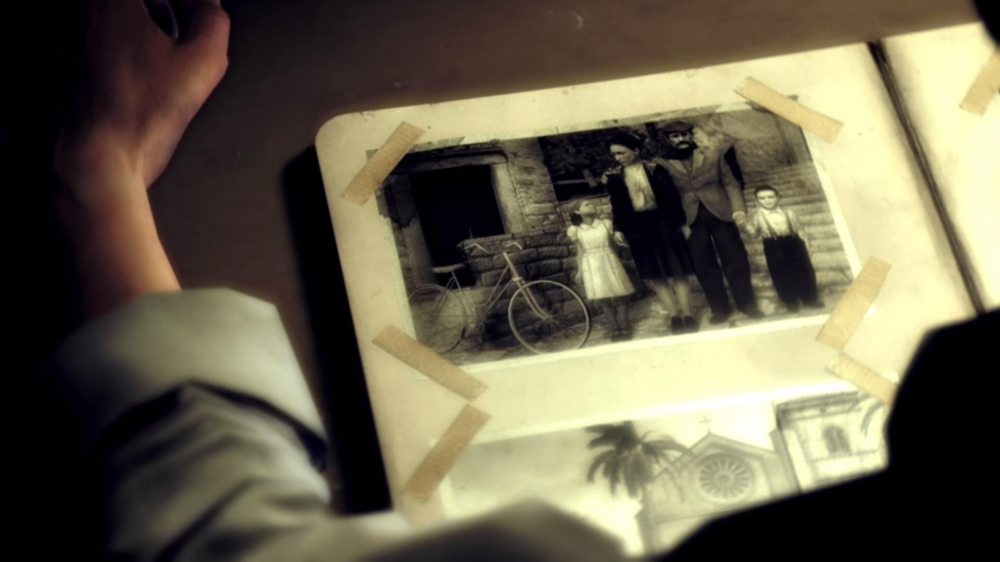

Информация об авторе
Шавров Артём Александрович
ЭФБО-02-24
Обо мне: Меня зовут Вито Скалетта. Я родился на Сицилии, в 25-м году. Этот малыш — я. Стою с родителями и сестрой Франческой, у нашего старого дома. Я мало что помню о тех временах, разве что жизнь была тяжёлой, а потом отец решил, что нам пора уезжать. Покинуть Сицилию. Пересечь океан и начать новую жизнь в Америке. Никогда в жизни я не видел ничего подобного Эмпайр-Бэй. Он был прекрасен. Впрочем, трудно представить нечто более скверное и отвратительное, чем наша новая конура. «Американская мечта»… Скорее уж кошмар. Отец стал работать в порту на человека, который перевёз нас сюда. Он работал как проклятый, зарабатывал гроши и почти всё спускал в кабаке. Со временем меня отдали в школу. Мне нужен был английский, но чёрта с два я бы заговорил на нём с итальянцами. Там я и встретил Джо. Постепенно мы стали лучшими друзьями. У обоих свистело в кармане, а пристойной работы не было — и мы затеяли своё скромное дело. Что ж, тогда нам не повезло. На дворе стоял 43-й год. Шла война, и для высадки на Сицилии нужны были солдаты, говорящие по-итальянски. Мне было восемнадцать, и в тюрьму я не хотел. Кто сказал, что нельзя вернуться на Родину?..
Работал фантазёром. Сочинял и праздновал.
Работал воровством. Воровал и продавал.
Работал рэпером. Читал и пел.